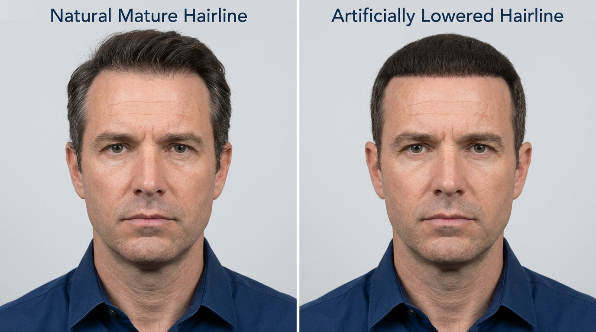
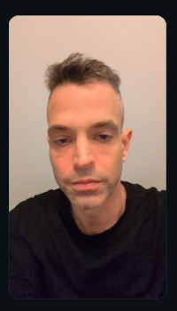
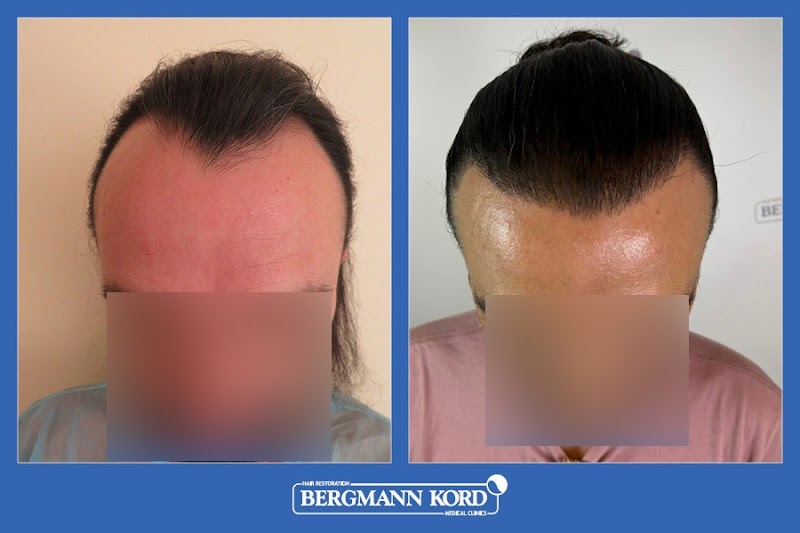
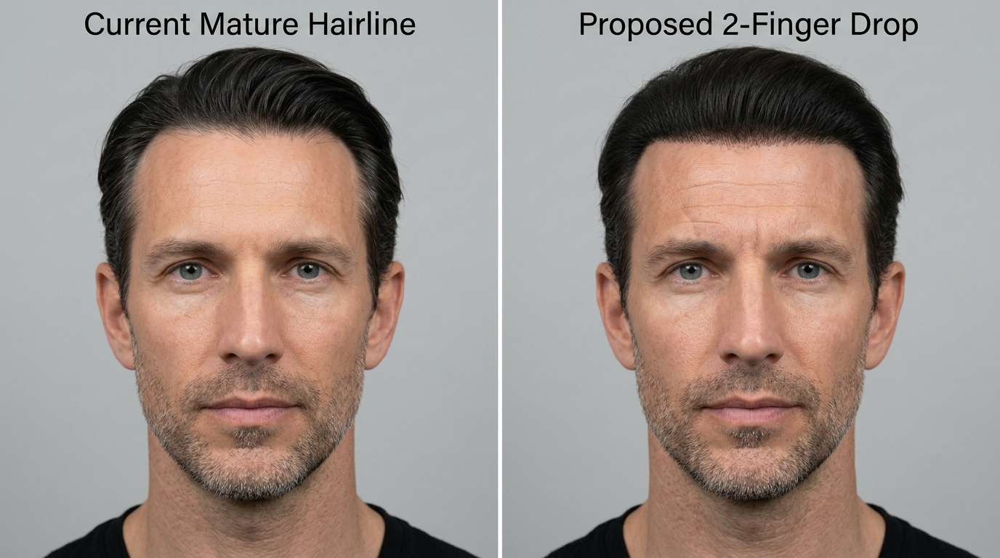
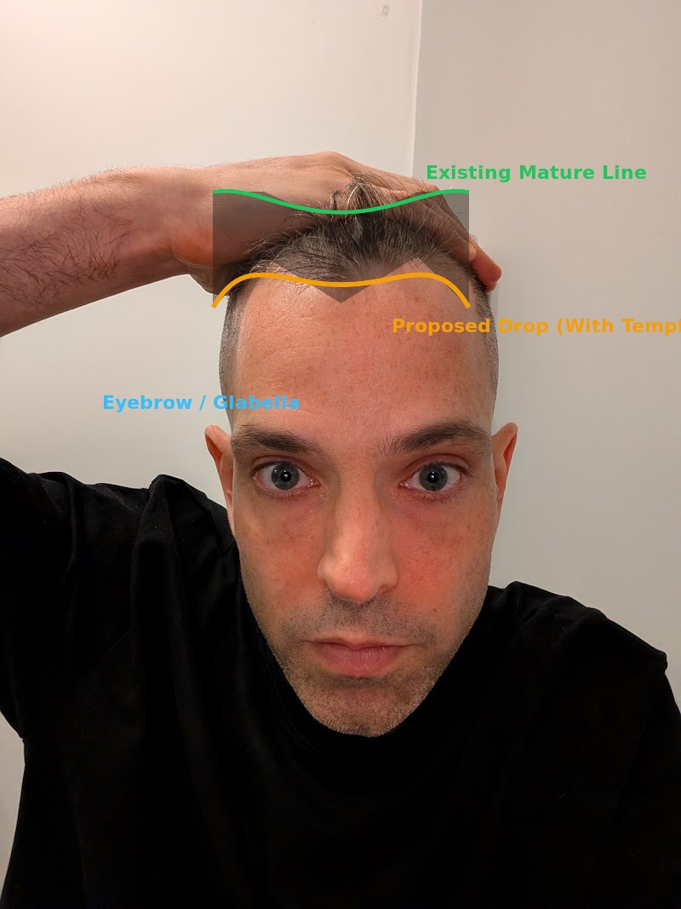

אבחון אישי, השוואת טיפולים תרופתיים, רכש בדבלין מול ישראל, מערכות שיער, ומפת דרכים למרפאות באתונה
קו השיער הקדמי שמור במבנה טוב, אך קיים דילול מפוזר לאורך מרכז הקרקפת והקודקוד (Mid-scalp / Crown). שקיפות הקרקפת בתאורה עילית נובעת משילוב של שטח מרווח יותר והידקקות בקוטר השערות.
משמעות ביולוגית: רוב הזקיקים באזור אינם מתים אלא ממוזערים (Miniaturized), כלומר הם עדיין פעילים ומסוגלים להגיב לעיבוי.
יתרון אופטי: ניגודיות נמוכה מול עור הקרקפת. בשיער שחור על עור בהיר, כל קרחת זועקת. שיער שיבה יוצר אשליית כיסוי רכה וטבעית יותר גם בצפיפות נמוכה יותר.
אתגר כירורגי: זקיקים לבנים שקופים מתחת למיקרוסקופ ודורשים מיומנות חילוץ גבוהה או צביעת שיער מקדימה באזור התורם כדי למנוע קטיעת שורשים.
אתה כבר נוטל פרופסיה (פינסטריד 1 מ"ג), וזהו צעד קריטי ששומר על המצב מנסיגה נוספת. להלן הדרכים המדעיות להעיר ולעבות את הזקיקים הממוזערים:
| טיפול | מנגנון פעולה | אפקטיביות ויעילות | אופן שימוש וזהירות |
|---|---|---|---|
| פינסטריד 1 מ"ג (פרופסיה) | חוסם כ-70% מהורמון ה-DHT. | מעולה לעצירת נשירה, בינוני בעיבוי שיער שכבר התדלדל. | כדור פומי יומי. כבר בשימוש יומיומי אצלך. |
| דואוטסטריד 0.5 מ"ג (Avodart) | חוסם מעל 90% מה-DHT (חוסם שני אנזימים). | יעיל יותר משמעותית מפינסטריד, עשוי להצמיח ולעבות שערות ממוזערות. | מחייב מרשם והתייעצות רפואית. מוריד רמות PSA ב-50%. |
| מינוקסידיל קצף 5% (Regaine Foam) | מרחיב כלי דם מקומיים ומאריך את שלב הגדילה (Anagen). | מעבה שערות קיימות ב-15% עד 30% אצל 40%-50% מהאנשים שמגיבים אליו. | קצף אינו שמנוני ומתייבש תוך דקה. לא למרוח מיד לאחר מחטים. |
| מיקרונידלינג (Dermastamp) | גירוי קולגן, זרימת דם ושחרור גורמי גדילה מקומיים. | מחקרים מראים הכפלת היעילות של מינוקסידיל בשילוב שבועי. | בבית, פעם בשבוע בלבד, עומק 1.0 מ"מ עד 1.5 מ"מ. להמתין 24 שעות לפני מריחה. |
באירלנד, קצף מינוקסידיל 5% (Regaine for Men Foam) נמכר מעבר לדלפק (Over The Counter) ללא צורך במרשם או ביקור רופא.
אין צורך ללכת לרופא משפחה פיזית ולשלם €70-80 על ביקור. באירלנד פועלים שירותי רפואה מקוונים מורשים ומפוקחים:
בפינסטריד 1 מ"ג המינון נמוך ומוגדר לנשירה. אך אם תשקול דואוטסטריד (Avodart), תרופה זו מיועדת במקור לערמונית מוגדלת ומורידה את ערכי ה-PSA בבדיקות דם בחצי (50%).
אזהרה: רישום דואוטסטריד בתיקו הרפואי של אדם מבוגר עלול לעוות מעקב אונקולוגי/אורולוגי שגרתי של אביך. עדיף בהרבה להוציא מרשם עצמאי בדבלין.
מערכות שיער מודרניות מבוססות על רשת תחרה (Lace) או פולימר דקיק (0.03 מ"מ) המודבק בדבק רפואי ישירות לקרקפת. המראה מושלם ובלתי נראה לעין, אך המחיר התפקודי והיומיומי כבד.
| קריטריון | מערכת שיער (פאה מודרנית) | השתלת שיער כירורגית | שמירה על שיער טבעי + תספורת קצרה |
|---|---|---|---|
| איכות המראה | מושלם לחלוטין, 100% צפיפות, בחירת צבע ומרקם. | שיפור טבעי של השיער שלך, צפיפות בינונית-גבוהה. | מראה טבעי, שקיפות קלה בתאורה ישירה. |
| שגרת תחזוקה | תובענית: פירוק, ניקוי שאריות דבק, גילוח והדבקה כל שבוע-שבועיים. | אפס התעסקות לאחר שנת החלמה. | תספורת שגרתית בלבד. |
| עלות שנתית | גבוהה וקבועה: החלפת יחידה כל 2-4 חודשים (אלפי יורו בשנה). | חד-פעמית: כ-€3,000 עד €6,000 להליך איכותי. | אפס. |
| תחושה פיזית | גירוד בקיץ, חום מתחת לדבק, חרדת התרופפות בים או מגע יד. | הקרקפת והשיער האמיתיים שלך ללא שום מגבלה. | חופש מלא. |
elad2109@gmail.com). עד כה התקבלו 2 תשובות פעילות (מ-Seneca עם הצעת PDF על סך €3,700 ואישור לטריכוסקופיה חינם, ומ-DHI Global שלה השבנו היום עם מועדים לשיחת וידאו ב-9/10 בנובמבר ומועדי בדיקה באתונה ב-19–20 או 12–14 בינואר).
כל המרפאות מדורגות לפי התאמה לדילול מפוזר (DPA) ומרחק מהבסיס בשכונת איליסיה (Ionos Dragoumi 34) וממרפאת ד"ר קראסטאריס (Chatzigianni Mexi 2):
| מרפאה ורופא מוביל | סטטוס פנייה ומענה (נובמבר 2026) | הצעת מחיר ושיטה | הגעה ללא מונית (רגל / מטרו) |
|---|---|---|---|
| 1. DHI Global Athens 30 Vouliagmenis Ave, Neos Kosmos Nikolina Nina Penzo ( npenzo@dhiglobal.com) |
✅ נקבעה שיחת זום עם רופא בכיר (DHI Master Surgeon) מועד: יום שני, 9 בנובמבר 2026, בשעה 15:30 שעון דבלין (17:30 שעון אתונה). 🔗 לחץ כאן לכניסה לזום (Meeting ID: 895 9787 7134, Passcode: 703417). בנוסף שוריין חלון לבדיקה פיזית באתונה ב-19–20 בינואר. |
שיטת Direct DHI (עט צ'וי מקורי ללא חיתוך תעלות, צוות רופאים מוסמך). מחיר יימסר בשיחת הזום ב-9 בנוב' (צפי: €3,500–€5,000). | 1.20 אירו במטרו (14 דק', מעליות בכל התחנות): קו כחול M3 מ-Megaro Mousikis ל-Syntagma (2 תחנות) + קו אדום M2 עד Akropoli/Syngrou-Fix + 4 דק' הליכה. |
| 2. Seneca Medical Group Athens Tower, Mesogeion 2, Ampelokipoi Piet Lambrecht ( plambrecht@senecamd.com) |
✅ ענו עם PDF (29–30 באוק') + נשלחו תמונות חדשות (3 בנוב') אישרו בכתב בדיקת טריכוסקופיה ללא גילוח וללא עלות בינואר ("No problem to arrange this"). ממתינים להתייחסות לתמונות החדשות מ-3 בנוב'. |
€3,700 מחיר פיקס ב-PDF ל-2,000–2,300 זקיקים (Direct FUE Mega Plus בעט Implanter ע"י רופא + PRP + צביעת שיער לבן בחינה באזור התורם). | 0 אירו ברגל (1.3 ק"מ, 15 דק' הליכה מישורית) או 1.20 אירו במטרו (תחנה אחת בקו הכחול M3 מ-Megaro Mousikis ל-Ampelokipoi). |
| 3. BHR Clinic Athens (Dr. Bisanga) Michalakopoulou 45, Ilisia info@bhrclinicathens.gr / info@bhrclinic.com |
⏳ נשלח ב-3 וב-4 בנוב' (ממתין למענה) נשלחה בקשה לבדיקת טריכוסקופיה באמצע ינואר + לוח התמונות המרוכז ותקריב הקרקפת. |
אבחון עלית עולמי (ד"ר כריסטיאן ביסנגה). מעולה לקבלת "אבחנת אמת" שמרנית של צפיפות אזור תורם ומיפוי מיניאטוריזציה. | 0 אירו ברגל (250 מטר בלבד, 3 דקות הליכה מישורית ממרפאת ד"ר קראסטאריס ב-Chatzigianni Mexi 2). |
| 4. Advanced Hair Clinics (Dr. Vekris) Konstantinou Ventiri 5, Ilisia / Hilton info@advancedhairclinics.gr |
⏳ נשלח ב-3 וב-4 בנוב' (ממתין למענה) נשלחו 3 תמונות קרקפת ב-3 בנוב' ולוח תמונות HD ב-4 בנוב' עם בקשה להערכה רפואית ובדיקה בינואר. |
שיטת One-Step FUE Implanter ללא סקלפל בהובלת המנתח הפלסטי ד"ר אנסטסיוס ווקריס (צפי: €3,500–€5,000). | 0 אירו ברגל (180 מטר בלבד, 2 דקות הליכה מישורית ממרפאת ד"ר קראסטאריס וכ-350 מטר מהדירה). |
| 5. Anastasakis Hair Clinic Dr. Konstantinos Anastassakis (ABHRS, FISHRS) info@anastasakishairclinic.gr |
⏳ נשלח ב-3 וב-4 בנוב' (ממתין למענה) נשלחו תמונות הקרקפת ושאלון הסינון הרפואי. |
רופא מנתח אישי מוסמך ABHRS (צפי: €5,500–€6,500). חשוב לוודא בשיחה שימוש ב-Implanter ללא חריצים מוקדמים באזור דליל. | נגיש במטרו בקו הכחול/ירוק (מומלץ לקבוע רק אם יענה עם פרוטוקול DHI/Implanter מתאים). |
6. Zontos Hair Clinic & Bergmann Kordinfo@zontoshairclinic.com / info@kord.gr (וואטסאפ: +30 697 369 9149) |
✅ Bergmann Kord פנו בוואטסאפ (4 בנוב') + נשלחו תמונות הווידאו ובקשת זום ביקשו בוואטסאפ תמונות עם פחות סנוור; שלחנו ל- info@kord.gr את 3 תמונות הווידאו בתאורה רכה ובקשה להצעת מחיר או שיחת זום. (מ-Zontos ממתינים למענה). |
ד"ר גאורגיוס זונטוס (רופא אישי ABHRS, €5,000–€6,000) ורשת Bergmann Kord הוותיקה ביוון. | גיבוי משני (העדיפות הראשונה לבדיקות פיזיות בינואר היא ל-4 המרפאות הראשונות שצמודות לאזור המגורים). |
פתח את הטבלה הזו בטלפון בזמן שיחת הווידאו מול DHI ובבדיקות הפיזיות באתונה כדי למדוד את סיכון ה-Shock Loss במספרים מדויקים:
| נושא הבדיקה | מה לשאול את הרופא באנגלית | ✅ אור ירוק לניתוח | 🛑 דגל אדום (סכנת Shock Loss) |
|---|---|---|---|
| 1. צפיפות קיימת במרכז הקרקפת | "On trichoscopy, how many native follicular units per cm² do I currently have in the mid-scalp and crown?" | מתחת ל-30–35 זקיקים לסמ"ר (יש מרווחים פתוחים ובטוחים להשתלה בין השערות). | מעל 45–50 זקיקים לסמ"ר (האזור צפוף בזקיקים ממוזערים; השתלה תפגע בהם ועדיף עיבוי תרופתי). |
| 2. אחוז מיניאטוריזציה ורווח נקי | "What percentage of my native hairs in the recipient zone are miniaturized, and are they at risk of permanent shock loss?" | הרופא ממפה אזורים דלילים נקיים ומבטיח רווח נקי גבוה ללא פגיעה בשורשים סמוכים. | מעל 30%–40% מיניאטוריזציה צפופה ללא רווחים נקיים (סיכון גבוה לאבד שיער מקורי קיים). |
| 3. מכשור ההחדרה וקוטר המחט | "Do you implant exclusively with a Choi Implanter Pen without pre-made scalpel/sapphire slits, and what needle diameter (mm) do you use?" | שימוש בלעדי ב-Choi Implanter Pen בקוטר עדין של 0.8 עד 0.9 מ"מ בזווית צמיחה טבעית. | פתיחת תעלות מראש בסכין ספיר (Pre-made slits) בתוך אזור עם שיער קיים. |
| 4. זהות המבצע בחדר הניתוח | "What is the full name of the doctor who physically performs both the extraction and the implantation, and how many patients do they treat per day?" | רופא נקוב בשמו מבצע 100% מההחדרה בין השערות הקיימות, עד 1–2 מטופלים ביום. | האצלת ההחדרה לטכנאים מתחלפים או מנתח שמבצע 3–5 ניתוחים במקביל. |
| 5. פרוטוקול שיער לבן/שיבה | "How do you visualize and extract my white/grey donor follicles without cutting the roots (transection)?" | צביעת האזור התורם (חינה/צבע רפואי) יומיים לפני הניתוח + משקפי הגדלה אופטיים ושיעור חיתוך שורשים מתחת ל-5%. | חילוץ "על עיוור" ללא צביעה מקדימה או ללא בקרה מיקרוסקופית של הזקיקים שנשלפו. |
| 6. קיבולת בטוחה של האזור התורם | "What is my donor density per cm², and how many grafts can be harvested safely while keeping a reserve for the future?" | צפיפות תורמת של 70+ זקיקים לסמ"ר, שאיבה שמרנית של 2,000–2,300 זקיקים והשארת רזרבה לעתיד. | הבטחה לשאיבת 3,500–4,500 זקיקים בישיבה אחת (סכנת דילול וצלקות בעורף). |
משמאל: קו שיער בוגר והרמוני לגיל 42. מימין: קו שהונמך ב-2 אצבעות, היוצר מצח דחוס ומראה פאה/קסדה.

ירוק: קו בוגר טבעי בהרמוניה עם הלסת והאף. אדום: הצעת המרפאה שפולשת לאזור שריר המצח הפעיל.
מתוך שיחת הווידאו: כשהשיער אינו משוך בכוח לאחור אלא מסופר בפייד רגיל, יש לך רעמת שיער שופעת ומרשימה.

דוגמה 08 שהוצגה בשיחה: קו מונמך ומעוגל הממחיש את המראה הבלתי טבעי של השתלה נמוכה מדי (Doll-like hairline).

מענה להצעת המוכרת: גם כשהקו אינו ישר ושומר על מפרצים (מימין), הנמכת 2 אצבעות סוגרת את המצח ומייצרת חזית כבדה לעומת המקור (משמאל).

ירוק: קו בוגר קיים. צהוב ושטח מוצלל: הנמכת 2 אצבעות עם מפרצים מדורגים ישירות על תמונת המצח שלך.

הורדה של שתי אצבעות מגיעה ישירות לאזור המתכווץ של שריר המצח בעת הרמת גבות והבעות פנים. השתלת שיער על שריר פעיל היא טעות כירורגית חמורה: השיער המושתל זז בצורה לא טבעית בכל הבעת פנים.
המרפאה סירבה לגעת בחלק העליון והאמצעי. התוצאה: פס שיער מושתל, צפוף וכהה מקדימה, עם מעבר פתאומי לשטח טבעי ודק יותר מאחוריו. זהו מראה טיפוסי שצועק מרחוק "עברתי השתלה".
בנק הזקיקים באחורי הראש מוגבל (כ-5,000 עד 6,000 זקיקים לכל החיים). שריפת 1,800 זקיקים על הנמכת מצח מיותרת תמנע ממך בעתיד כיסוי של אמצע הראש או הקודקוד אם תחול נסיגה נוספת.
הנציגה ייעצה להפסיק פרופסיה "כי זה אנדרוגנים". זו טעות רפואית קשה: פרופסיה חוסמת אנדרוגנים (DHT). הפסקה אחרי 10 שנות שימוש תוביל לנשירת ריבאונד מהירה של כל השיער ששרד עד כה.
| פרמטר להשוואה | השתלת קו שיער באתונה (Bergmann Kord) | מצב קיים + תחזוקה תרופתית שמרנית |
|---|---|---|
| עלות כספית ישירה | כ-€3,500 (€2,800 ניתוח + טיסות, מלון, תרופות והוצאות) | €0 הוצאות ניתוח (רק המשך פרופסיה כסדרה) |
| תוצאה אסתטית צפויה | שלילית: סיכון לקו שיער מלאכותי, מצח מכווץ ולא פרופורציונלי | מקסימלית: מראה גברי, בוגר, טבעי ומלא |
| זמן השבתה והחלמה | גילוח ראש מלא, אדמומיות, גלדים ונשירת הלם (Shock Loss) | 0 ימי השבתה |
| סיכון בריאותי (מסתם דו-צנפי) | הרדמה מקומית עם אפינפרין (מכווץ כלי דם) בסמיכות לניתוח בינואר | אפס סיכון |
| בנק הזקיקים לעתיד | אובדן של 1,800 זקיקים לצורך שאינו נחוץ | 100% רזרבה שמורה לכל צורך עתידי |